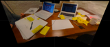
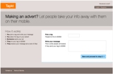

Some common project ingredients
In every project the goal is to create a site or tool that works well by learning as much as possible about the users' needs and behaviour. The end result should be comfortable and compelling for users to work with, whilst also serving the clients' business interests.
Each project process is somewhat different, but these are some of the ingredients you might find in the work I do:
- Conducting discovery workshops to define priorities
- Conducting basic user research (such as think-aloud sessions)
- Collaboration with researchers and other UX specialists
- Interpretation of test data
- Recommending design based on findings with clear justification
- Paper-based sketching
- Wireframing and design input
- Talking with developers about where there can be compromise and where there can’t
- Overseeing design to ensure recommendations are implemented faithfully
The case studies that follow show how these ingredients were used in recent projects.
Project story 1 Plant Press: A gardening and plants retail site with a complex search issue
The project’s outcome
Together with a UX research specialist I created designs and wireframes for faceted navigation in place of the advanced search system that the client thought they might need. These changes make searching for and buying plants a much more compelling experience for the user.
The new navigation accurately and intuitively reflects the way gardeners search and behave when looking for specific plants and supplies. The system is now also more capable of delivering the right search results for the gardeners’ needs.
Giving the client much more successful SEO was also an incidental outcome of the project.
What Plant Press wanted
- They wanted better search functionality
- They wanted more searches to take place with more accurate results
- They wanted their search and site to be more accessible – and more compelling to use
- They wanted a logical way to order information
The process
| 1 Desk research |
→ | 2 Target audience interviews |
→ |
3 Competitor site analysis |
→ | 4 Result prioritisiation |
→ | 5 Developed faceted navigation system |
→ | 6 Wireframes |
- A UX researcher and I collaborated; we conducted competitor website analysis and other desk research
- We conducted target audience interviews: recruiting gardeners and questioning them on community and buying behaviours
- Based on the discoveries made, we tested them on 3rd party sites
- We prioritised the results and determined the key factors that gardeners’ choices were based on
- We developed an easy-to-use faceted navigation system
- We produced wireframes to be used by visual designers and developers
| |
 |
|
|
| Initial idea | Considering formatting rules | Thinking about duplicate categories | Starting point for visual design |
Project story 2 Teachable: Improving user motivation to give feedback and rate downloadable classroom materials
The project’s outcome
The client now has a well-formulated strategy for gathering valuable feedback from users, based on sound thinking and research into their behaviour. The client is now also able to classify its users according to their level of involvement in the site, which helps them to clarify their processes. The first iteration is now complete, and structured so that subsequent iterations on the site can happen efficiently. This is an ongoing project.
What Teachable wanted
- They wanted to improve the amount of feedback they were getting on their site
- They wanted to find the right time to request feedback from users
- They wanted a more ordered approach to improving feedback
- They wanted an efficient, iterative UX process
The process
| 1 Developed user types |
→ | 2 Discovery workshop |
→ | 3 Wireframing |
→ | 4 Implementation by client |
- Ground work: I developed a matrix of user types based on raw materials provided by the client. This rationalised the users and redefined the terminology the client was using, in order to make the process simpler. I also identified the gaps in thinking in initial wireframes provided by the client.
- Discovery workshop and sketching: Using hands-on paper-based sketching with stick-notes and colour coding, the client and I worked together (in a way that made design accessible to the client) so that the website priorities could be defined, and key ideas could be expressed.
- Wireframing: I produced a tidy rationalisation of the workshop sketches with annotations, tweaks and amends ready for the visual designer to use, and so that the developer could implement the ideas easily.
- The client is currently implementing the design.
| |
|
|
|
| Defining user types | Showing school chooser states | Simplified header, new footer |
New interface promoting feedback |
Project story 3 Taykt: Simplifying a complex concept and making it attractive for users to sign-up
The project’s outcome
The site concepts became significantly easier to understand for users, and more inviting to ‘get stuck in’ and start using the tool that the site was offering. Together with a copywriter, we made the sign-up process ultra-easy and attractive for users, removed unnecessary stages and found ways to increase their motivation to ‘get started’.
What Taykt wanted
- They wanted the site to be more understandable, it seemed that users ‘weren’t getting it’.
- They wanted the sign-up process to flow better
- They wanted more people to sign up
The process
| 1 Initial user testing |
→ | 2 Site flow analysis |
→ | 3 Refined the language |
→ | 4 Refined flow |
→ | 5 Implementation by client |
→ | 6 Validiation |
- Before doing anything, initial user testing on the site made it clear that people ‘weren’t getting the concept’
- I mapped the flow of the site and sign-up and re-ordered the stages, merging the sign-up with the explanation, allowing users to ‘get stuck in’
- Together with a copywriter we refined the language used to describe the concept and made it much more understandable
- We found ways to increase motivation, by removing unnecessary steps that hindered the users from getting started
- I made design recommendations which were implemented
- (weeks later) I conducted think-aloud sessions with users (I also made further recommendations, some of which have now been implemented)
|  |  | |||
| Collaborating with the copywriter | New homepage layout and copy | Mapping & optimising user flows | Explaination of improved user flow | Refined homepage layout |